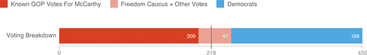

How A Fractured Party Complicated The Race For Speaker
The far-right Freedom Caucus — which has around 40 members, by many counts — endorsed Daniel Webster in the speaker race. Between Webster and other conservative challenger Jason Chaffetz, McCarthy would have had a difficult time getting to 218 votes.
